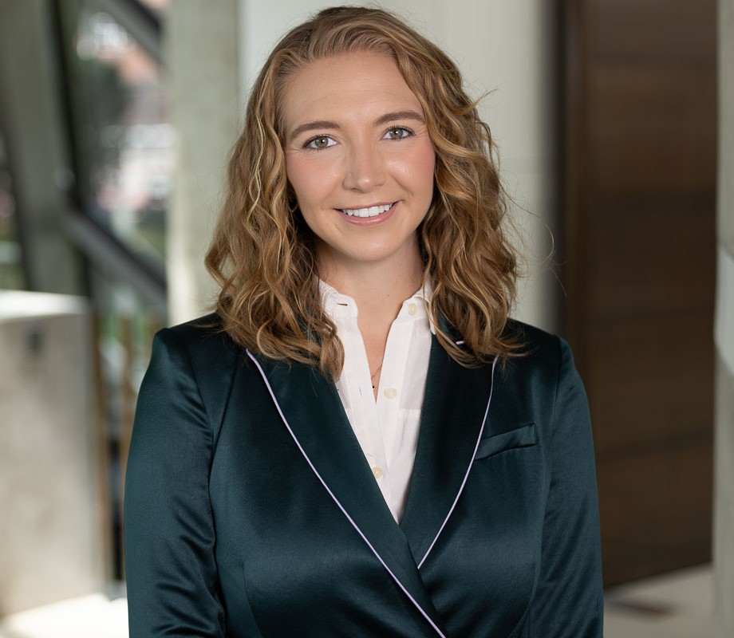
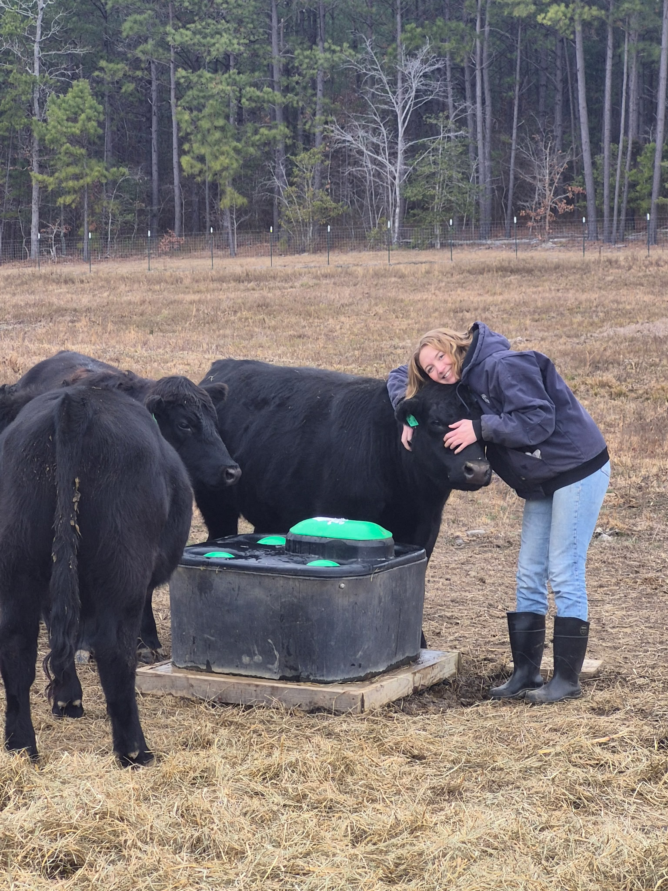

Happy Hello!
I am a PhD candidate in Harvard Business School’s program in Health Care Management, where I am advised by Professors Amy Edmondson, Ryan Buell, and Nelson Repenning (of MIT Sloan).
I am interested in the parts of people’s jobs that drive them nuts. My research focuses on how organizations design, maintain, and automate the information systems that make work visible, accountable, and coordinated. I study how these systems — and the AI tools we increasingly use to manage them — reshape professional judgment, administrative burden, and the meaning of expert work. To this end, I concentrate on:
- Explaining how organizational records lose value for the very workers whose authorship and use make them meaningful.
- Theorizing the organizational roots of administrative and documentation burden.
- Identifying when technologies that relieve burden also erode expertise.
Before HBS, I worked at the FDA studying opioid-use policy, held finance and operations roles at several contract research organizations, and managed the internal database system for a cybersecurity firm — the kind of information infrastructure I now study. I earned a Bachelor’s in Mathematics and Economics from Emory University and a Master’s in Biostatistics from the University of North Carolina at Chapel Hill.

Research
Publications
- Nikhil R. Sahni, Brooke Istvan, Celia Stafford, David Cutler. Perceptions of prior authorization burden and solutions. Health Affairs Scholar, 2(9), 2024.
- Celia Stafford, Wesley J. Marrero, Rebecca B. Naumann, Kristen Hassmiller Lich, Sarah Wakeman, Mohammad S. Jalali. Identifying key risk factors for premature discontinuation of opioid use disorder treatment in the United States: a predictive modeling study. Drug and Alcohol Dependence, 237, 2022.
- Tse Yang Lim, Erin J. Stringfellow, Celia Stafford, Catherine DiGennaro, Jack B. Homer, Wayne Wakeland, Sara L. Eggers, Reza Kazemi, Lukas Glos, Emily G. Ewing, Calvin B. Bannister, Keith Humphreys, Douglas C. Throckmorton, Mohammad S. Jalali. Modeling the evolution of the US opioid crisis for national policy development. Proceedings of the National Academy of Sciences, 119(23), 2022.
- Erin J. Stringfellow, Tse Yang Lim, Keith Humphreys, Catherine DiGennaro, Celia Stafford, Elizabeth Beaulieu, Jack Homer, Wayne Wakeland, Benjamin Bearnot, R. Kathryn McHugh, John Kelly, Lukas Glos, Sara L. Eggers, Reza Kazemi, Mohammad S. Jalali. Reducing opioid use disorder and overdose deaths in the United States: a dynamic modeling analysis. Science Advances, 8(25), 2022.
- Mohammad S. Jalali, Emily Ewing, Calvin B. Bannister, Lukas Glos, Sara Eggers, Tse Yang Lim, Erin Stringfellow, Celia Stafford, Rosalie Liccardo Pacula, Hawre Jalal, Reza Kazemi-Tabriz. Data needs in opioid systems modeling: challenges and future directions. American Journal of Preventive Medicine, 60(2), e95–e105, 2021.
Conference Presentations
- Stafford, C. (presenter). When changing the cost of data creation undermines their value. INFORMS Healthcare, Raleigh, NC, 2026.
- Stafford, C. (presenter). Tech burden and why well-intentioned systems become unbearable: the case of electronic health records and their cascading impact on clinicians and care quality. International System Dynamics Conference, 2024.
- Stafford, C. (presenter), et al. Predictors of premature discontinuation of opioid use disorder treatment in the United States. INFORMS Healthcare (held virtually), 2021.
- Stringfellow, E. (presenter), Lim, T. Y., Stafford, C., DiGennaro, C., Homer, J., Wakeland, W., Jalali, M. S. Reducing opioid use disorder and overdose in the United States: policy analysis. 39th International Conference of the System Dynamics Society, Chicago, Illinois (held virtually), 2021.
- Lim, T. Y. (presenter), Stringfellow, E., Stafford, C., DiGennaro, C., Homer, J., Wakeland, W., Glos, L., Kazemi-Tabriz, R., Jalali, M. S. Reducing opioid use disorder and overdose in the United States: model development and estimation. 39th International Conference of the System Dynamics Society, Chicago, Illinois (held virtually), 2021.
- Lim, T. Y. (presenter), Stringfellow, E., Stafford, C., DiGennaro, C., Beaulieu, E., Ewing, E., Glos, L., Kazemi-Tabriz, R., Jalali, M. S. Modeling the opioid crisis to support national policy development. 38th International Conference of the System Dynamics Society, Bergen, Norway (held virtually), 2020.
Teaching
Courses
- MIT Sloan 15.873, System Dynamics for Business and Policy — Teaching Assistant, Fall 2022, Spring 2023, Fall 2023.
- MIT Sloan 15.736, Introduction to System Dynamics (Executive MBA) — Teaching Assistant, Summer 2022, Summer 2023.
- Harvard Business School, Transforming Healthcare Delivery — Teaching Assistant, Spring 2022, Spring 2023.
I have also facilitated the Beer Game more than ten times alongside the system dynamics faculty (Nelson Repenning, John Sterman, Hazhir Rahmandad, and Brad Morrison), taught extensively in the MIT Sloan Executive Education program, and served as a teaching assistant, with Hazhir Rahmandad, for the Asia School of Business course in system dynamics.
What students say
I have taught cancer medicine and blood disorders to over 15 generations of hematology/oncology fellows at Boston University and Tufts… I can unequivocally attest that Celia is in a category of her own. Celia is everything a student would want to benefit from: uniquely approachable, uniquely effective in communicating the material to be taught, and very clearly enjoying doing so. Celia is not a gifted teacher: she is a gifted person, and she gives it all in coaching students… she is definitely — and without a moment of doubt — the person I’d go back to for guidance were I to have a question in System Dynamics… Please, don’t miss the opportunity to interact with her.
Student, 15.736 Introduction to System Dynamics, 2023
Celia was more than a masterful TA; she was the instructor who made system dynamics and a deeper understanding of it come alive for so many students in the class, especially me. When any tool or topic in the discipline got tricky, Celia was uniquely capable of distilling the issue into comprehensible language. Her presence was invaluable to our experience, and I know many of my classmates would not have loved system dynamics as much as we do now without her.
Student, 15.736 Introduction to System Dynamics, 2023
Celia is so patient. She took the time to understand where my gap in understanding was, then gently nudged me to piece together the right parts in the right order to get to the conclusion. She never told me an answer (I did ask), but really focused on developing my deeper understanding of system dynamics in a way that made sense to me.
Student, 15.736 Introduction to System Dynamics, 2023
Service
- Organizer, Student Colloquium, System Dynamics Society — over 100 attendees in person and online, 2024.
- Organizer, doctoral-program social events, Harvard Business School and MIT.
Beyond my research…
My parents keep a farm with cows, goats, and bees, and some of my favorite days are the ones I spend working on it. I grew up around animals and around work done outdoors and by hand, and I’ve never lost my fondness for either.
More than anything, though, I care about community. I have a habit of collecting people, a little like Pokémon, from every walk of life and line of work. All summer I host picnics on the Esplanade that draw anywhere from five to twenty-five of them: boat captains and Patriots cheerleaders, the steward of Laborers’ Local 151, doctors, lawyers, and fellow PhDs. Everyone is welcome. I’ve also served as a resident advisor for my graduate house on campus. I tend to say yes, and saying yes has a way of carrying me somewhere I didn’t expect.
